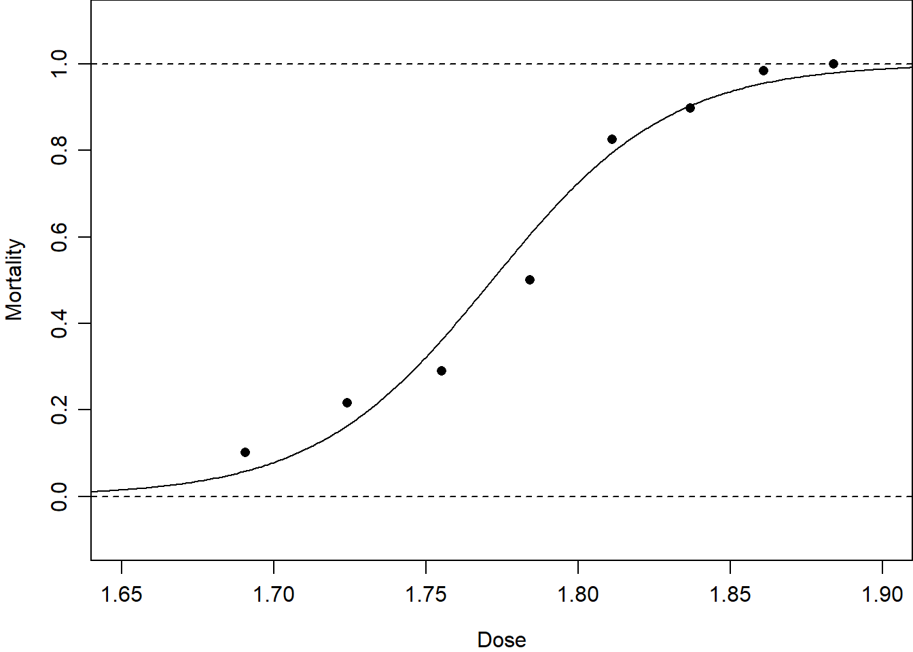
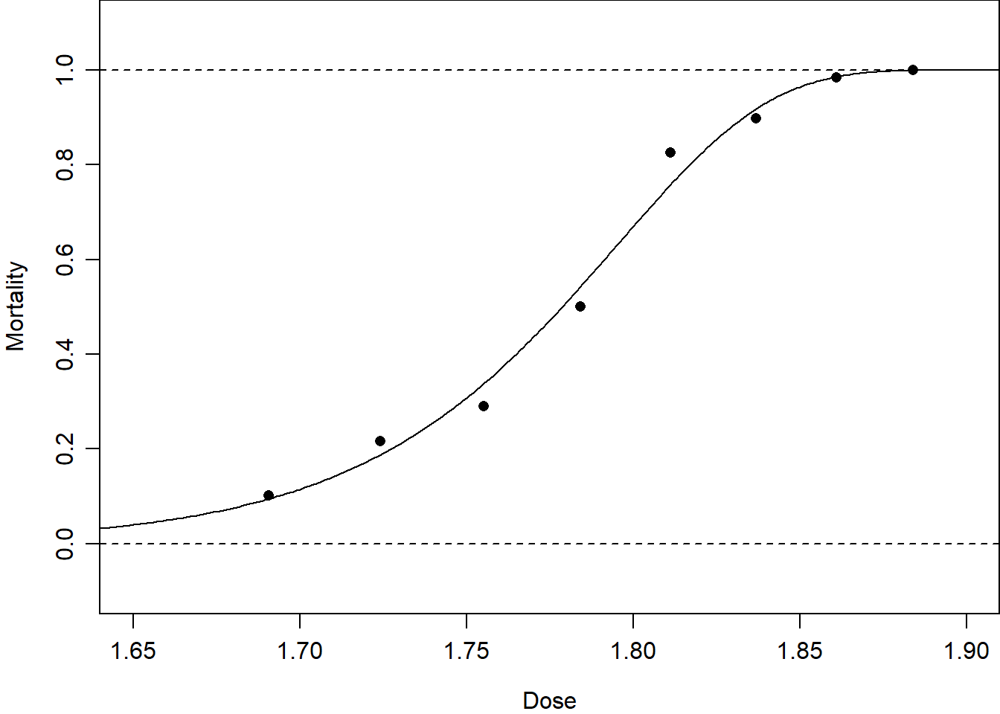

3 GLM Theory
\[ \def\b#1{\mathbf{#1}} \def\E{\mbox{E}} \def\V{\mbox{Var}} \]
3.1 Motivating examples
We cannot always assume that the dependent variable \(y\) is normally distributed. For example, for the beetle mortality data in Table 1.1, suppose each beetle subjected to a dose \(x_i\) has a probability \(p_i\) of being killed. Then the number of beetles killed \(y_i\) out of a total number \(m_i\) at dose-level \(x_i\) will have a \(\text{Bin}(m_i,p_i)\) distribution:
\[ \text{Pr}(y_i ;~ p_i,m_i) = \left(\begin{array}{c} m_i\\ y_i \end{array} \right) p_i^{y_i} (1-p_i)^{m_i-y_i} \tag{3.1}\] where \(y_i\) takes values in \(\{0,1,\dots,m_i\}\).
Table 3.1 contains seasonal data on tropical cyclones for 13 seasons. Suppose that, within season \(i\), there is a constant probability \(\lambda_i dt\) of a cyclone occurring in any short time-interval \(dt\). Then the total number of cyclones \(y_i\) during season \(i\) will have a Poisson distribution with mean \(\lambda_i\), that is \(y_i\sim \text{Po}(\lambda_i)\):
\[ \text{Pr}(y_i ;~ \lambda_i) = \frac{\lambda_i^{y_i} e^{-\lambda_i} }{y_i!} \tag{3.2}\] where \(y_i\) takes values in \(\{0,1,2,\dots\}\).
| Season | 1 | 2 | 3 | 4 | 5 | 6 | 7 | 8 | 9 | 10 | 11 | 12 | 13 |
| No of cyclones | 6 | 5 | 4 | 6 | 6 | 3 | 12 | 7 | 4 | 2 | 6 | 7 | 4 |
In these two examples, we have non-normal data and would like to know whether and how the dependent variable \(y_i\) depends on the covariate \(x_i\) or \(i\).
Generalized linear models provide a modelling framework for data analysis in the non-normal setting. We will revisit the beetle mortality and cyclone data sets after describing the structure of a generalized linear model.
3.2 The GLM structure
A generalized linear model relates a continuous or discrete response variable \(y\) to a set of explanatory variables \(x=(x_1, \ldots, x_p)\). The model contains three parts:
Random part: The probability function of \(y\) is assumed to belong to the two-parameter exponential family of distributions with parameters \(\theta\) and \(\phi\):
\[ f(y; \theta, \phi) = \exp \left\{ \frac{y \theta - b(\theta)} {\phi} + c(y, \phi) \right\}, \tag{3.3}\] where \(\phi>0\). Here, \(\theta\) is called the canonical or natural parameter of the distribution and \(\phi\) is called the scale parameter. We show below that the mean \(\mbox{E}[y]\) depends only on \(\theta\), and \(\mbox{Var}[y]\) depends on \(\phi\) and possibly also \(\theta\). Various choices for functions \(b(\cdot)\) and \(c(\cdot)\) produce a wide variety of familiar distributions (see below). Sometimes we may set \(\phi=1\); then Equation 3.3 is called the one-parameter exponential family.
Further, note that in some references to generalized linear models (such as Dobson and Barnett, 3rd edn.), \(\phi\) does not appear at all in the exponential family formula Equation 3.3, instead it is absorbed into \(\theta\) and \(b(\theta)\).
In this module, we will generally assume that each observation \(y_i\), \(i=1,\dots,n\), is independently drawn from an exponential family where \(\theta\) depends on the covariates for each unit of observation \(i\). Thus we write \[ f(y_i; \theta_i, \phi) = \exp \left\{ \frac{y_i \theta_i - b(\theta_i)} {\phi} + c(y_i, \phi) \right\}. \] Note the subscripts on both \(y\) and \(\theta\).
Systematic part: This is a linear predictor: \[ \eta = \sum_{j=1}^p \beta_j x_j. \tag{3.4}\]
Link function: This is an isomorphic function providing the link between the linear predictor \(\eta\) and the mean \(\mu = \mbox{E}[y]\):
\[ \eta = g(\mu), \quad \mbox{and} \quad \mu = g^{-1}(\eta) = h(\eta). \tag{3.5}\]
Here, \(g(\mu)\) is called the link function, and \(h(\eta)\) is called the inverse link function.
We will now discuss each of these parts in more detail.
3.3 The random part of a GLM
We begin with some examples of exponential family members.
3.3.1 Example: Poisson distribution
If \(y\) has a Poisson distribution with parameter \(\lambda\), \(y \sim \text{Po}(\lambda)\), then \(y\) takes values in \(\{0,1,2,\dots\}\) and has probability mass function: \[ f(y) = \frac{e^{-\lambda} \lambda^y} {y!} = \exp \left\{y \log \lambda - \lambda - \log y! \right\}, \tag{3.6}\] which has the form of Equation 3.3 with components as in Table 3.2.
| \(\theta\) | \(\phi\) | \(b(\theta)\) | \(c(y,\phi)\) |
|---|---|---|---|
| \(\log\lambda\) | \(1\) | \(\lambda=e^\theta\) | \(-\log y!\) |
For example, to model the cyclones data in Table 3.1, we might simply assume that the number of cyclones in each season has a Poisson distribution, assuming a constant rate \(\lambda\) across all seasons \(i\). That is \(y_i \sim \text{Po}(\lambda).\)
3.3.2 Example: Binomial distribution
Let \(y\) have a Binomial distribution, (write \(y \sim \text{Bin}(m, p)\) with \(m\) fixed. Then \(y\) is discrete, taking values in \(\{0,1,\dots,m\}\), and has probability mass{#tbl-GLM-poisson} function: \[ f(y) = {m \choose y} p^y (1 - p)^{m - y} = {m \choose y} \left(\frac{p}{1-p} \right)^y (1 - p)^m \] which can be re-written as \[ f(y) = \exp \left\{ y\ \mbox{logit } p + m \log (1-p) + \log {m \choose y}\right\}, \tag{3.7}\] which has the form of Equation 3.3 with, \[ \theta=\text{logit} \ p = \log \left( \frac{p}{1-p}\right), \] and with components as in Table 3.3.
| \(\theta\) | \(\phi\) | \(b(\theta)\) | \(c(y,\phi)\) |
|---|---|---|---|
| \(\mbox{logit }p\) | \(1\) | \(m\log(1+e^\theta)\) | \(\log{m\choose y}\) |
Where it can be shown that \(-m\log(1-p)=m\log(1+e^\theta)\) – see Exercises.
3.3.3 Example: Normal distribution
Let \(y\) have a Normal distribution with mean \(\mu\) and variance \(\sigma^2\). Then \(y\) takes values on the whole real line and has probability density function
\[\begin{align*} f(y; \mu, \sigma^2) &= \frac{1}{\sqrt{2 \pi \sigma^2}} \exp \left\{ \frac{-1}{2\sigma^2} (y - \mu)^2 \right\}, \notag \\ &= \frac{1}{\sqrt{2 \pi \sigma^2}} \exp \left\{-\frac{y^2}{2 \sigma^2} + \frac{y\mu}{\sigma^2} - \frac{\mu^2}{2 \sigma^2}\right\}\\ &= \exp \left\{ \frac{y \mu - \mu^2/2}{\sigma^2} + \left[\frac{-y^2}{2\sigma^2} - \frac{1}{2} \log (2 \pi \sigma^2) \right]\right\}, \end{align*}\] which has the form of Equation 3.3 with components as in Table 3.4.
| \(\theta\) | \(\phi\) | \(b(\theta)\) | \(c(y,\phi)\) |
|---|---|---|---|
| \(\mu\) | \(\sigma^2\) | \(\theta^2/2\) | \(-\frac{y^2}{2\phi} - \frac{1}{2} \log (2 \pi \phi)\) |
Where it can be shown that \(\frac{-y^2}{2\sigma^2} - \frac{1}{2} \log (2 \pi \sigma^2)=-\frac{y^2}{2\phi} - \frac{1}{2} \log (2 \pi \phi)\) – see Exercises.
From the usual regression point of view, we write \(y = \alpha + \beta x + \epsilon\), with \(\epsilon \sim N(0, \sigma^2)\). From the point of view of a generalized linear model, we write \(y \sim N(\mu, \sigma^2)\) where \(\mu(x) = \alpha + \beta x\).
3.4 Moments of exponential-family distributions
It is straightforward to find the mean and variance of \(Y\) in terms of \(b(\theta)\) and \(\phi\). Since we want to explore the dependence of \(\mbox{E}[Y]\) on explanatory variables, this property makes the exponential family very convenient.
Proposition 3.1 For random variables in the exponential family: \[ \mbox{E}[Y] = b'(\theta), \quad \mbox{and } \quad \mbox{Var}[Y] = b''(\theta)\phi. \tag{3.8}\]
Proof We give the proof for a continuous random variables. For the discrete case, replace all integrals by sums.
Starting with the simple property that all probability density functions integrate to 1, we have \[ 1 = \int \exp \left\{ \frac{y \theta - b(\theta)}{\phi} + c(y,\phi)\right\} dy \] and then differentiating both sides with respect to \(\theta\) gives \[ 0 = \int \left[\frac{ y - b'(\theta)}{\phi} \right]\exp \left\{ \frac{y \theta - b(\theta)}{\phi} + c(y,\phi)\right\}\ dy. \tag{3.9}\] Next, using the definition of the exponential family to simplify the equation gives \[ 0 = \int \left[\frac{ y - b'(\theta)}{\phi} \right] f(y; \theta)\ dy \] and expanding the brackets leads to \[ 0 = \frac{1}{\phi} \left(\int y f(y; \theta) dy - b'(\theta) \int f(y;\theta)\ dy \right). \] The first integral is simply the expectation of \(Y\) and the second is the integral of the probability density function of \(Y\), and hence \[ 0 = \frac{1}{\phi} \left(\mbox{E}[Y] - b'(\theta)\right) \] which implies that \[ \mbox{E}[Y] = b'(\theta), \tag{3.10}\] which proves the first part of the proposition.
Differentiating Equation 3.9 by parts and then using the definition of the exponential family to simplify again yields \[ 0 = \int \left\{ -\frac{b''(\theta)}{\phi} + \left[\frac{ y - b'(\theta)}{\phi} \right]^2 \right\} f(y; \theta)\ dy \] and using Equation 3.10 gives, \[ 0 = -\frac{b''(\theta)}{\phi} +\int \left[\frac{ y - \mbox{E}[Y]}{\phi} \right]^2 f(y; \theta)\ dy \] \[ 0 = -\frac{b''(\theta)}{\phi} + \frac{\mbox{Var}[Y]}{\phi^2} \] which implies that \[ \mbox{Var}[Y] = \phi \ b''(\theta). \] which proves the second part of the proposition.
Together, these two results allow us to write down the expectation and variance for any random variable once we have shown that it is a member of the exponential family.
| \(\theta\) | \(b(\theta)\) | \(\phi\) | \(\mbox{E}[Y]=b'(\theta)\) | \(b''(\theta)\) | \(\mbox{Var}[Y]=b''(\theta)\phi\) | |
|---|---|---|---|---|---|---|
| Poisson, \(Po(\lambda)\) | \(\log \lambda\) | \(e^\theta\) | \(1\) | \(e^\theta=\lambda\) | \(e^\theta\) | \(e^\theta\times 1=\lambda\) |
| Normal, \(N(\mu,\sigma^2)\) | \(\mu\) | \(\theta^2/2\) | \(\sigma^2\) | \(\theta=\mu\) | \(1\) | \(1\times \sigma^2=\sigma^2\) |
3.5 The systematic part of the model
The second part of the generalized linear model, the linear predictor, is given in as \(\eta = \sum_{j=1}^p \beta_j x_j\), where \(x_j\) is the \(j\)th explanatory variable (with \(x_1=1\) for the intercept). Now, for each observation \(y_i,\ i=1,\dots,n\), the explanatory variables may differ. To make explicit this dependence on \(i\), we write: \[ \eta_i = \sum_{j=1}^p \beta_j x_{ij}, \tag{3.11}\] where \(x_{ij}\) is the value of the \(j\)th explanatory variable on individual \(i\) (with \(x_{i1}=1\)). Rewriting this in matrix notation: \[ \eta = X \beta, \tag{3.12}\] where now \(\boldsymbol{\eta} = (\eta_1,\dots,\eta_n)\) is a vector of linear predictor variables, \(\boldsymbol{\beta} = (\beta_1,\dots,\beta_p)\) is a vector of regression parameters, and \(X\) is an \(n\times p\) design matrix.
Recall from that we are concerned with two kinds of explanatory variable:
Quantitative — for example, \(x_j \in (-\infty, \infty)\) etc.
Qualitative — for example, \(x_j \in \{A, B, C\}\) etc.
As discussed in , each quantitative variable is represented in \(X\) by an \(n \times 1\) column vector. Each qualitative variable, with \(k+1\) levels, say, is represented by a dummy \(n \times k\) matrix of 0’s and 1’s (one column, usually the first, being dropped to avoid identification problems).
3.6 The link function
On we saw that the contribution of randomness to an observation \(y\) might be described with a member of the exponential family. We also saw that the systematic part of \(y\) might be described using a linear predictor \(\eta\) of the explanatory variables. In we introduced the notion of a link function \(\eta = g(\mu)\) to link these two parts together, where \(\mu\) is the mean of \(y\).
Rarely, the choice of link function \(g(\mu)\) is motivated by theory underlying the data at hand. For example, in a dose–response setting, the appropriate model could possibly be motivated by the solution to a set of partial differential equations describing the flow through the body of a dose of a drug.
When there is no compelling underlying substantive theory, we typically choose a link function that will transform a restricted range of the dependent variable onto the whole real line. For example, when observations are measurements they are typically positive, so we have \(\mu>0\) and might choose the logarithmic link: \[ g(\mu) = \log(\mu). \tag{3.13}\] When observations are binomial counts from \(B(m,p), \ 0 < p < 1\), with mean \(\mu = mp\), we might choose the logit link from \[ \eta = g(\mu) = \text{logit}(\mu/m)= \text{logit}(p) = \log\{p/(1-p)\} \tag{3.14}\] or the probit link which is the inverse of the cumulative distribution function of the \(N(0,1)\) distribution: \[ \eta = g(\mu) = \Phi^{-1}(\mu/m) = \Phi^{-1}(p), \tag{3.15}\] or the complementary log-log (cloglog) link: \[ \eta = g(\mu) = \log(-\log(1-\mu/m))= \log(-\log(1-p)), \tag{3.16}\] or the cauchit link which is the inverse of the cumulative distribution function of the Cauchy (\(t_1\)) distribution: \[ \eta = g(\mu) = \tan(\pi(\mu/m-\tfrac{1}{2})) = \tan(\pi(p-\tfrac{1}{2})). \tag{3.17}\] shows these link functions for proportions fitted to the beetle mortality data. This demonstrates that the logit and probit links are very similar, that the complementary log-log link fits these data slightly better in the extremes, but that the cauchit link fits these data quite poorly in the extremes.


3.7 The canonical links
A mathematically and computationally convenient choice of link function \(g(\mu)\) can be constructed by setting: \[ \theta =\eta, \tag{3.18}\] where \(\theta\) is the canonical parameter of the exponential family as defined in Equation 3.3. Then, Equation 3.8 shows that the mean \(\mu\) is a function of \(\theta\). Therefore, Equation 3.18 indirectly provides a link between \(\mu\) and \(\eta\). That is, Equation 3.18 implicitly defines a link function \(\eta=g(\mu)\).
What is the form of this \(g(\cdot)\)?
From Equation 3.8, \[ \mu = b'(\theta). \] So, provided function \(b'(\cdot)\) has an inverse \((b')^{-1}(\cdot)\), we may write \[ \theta = (b')^{-1}(\mu). \tag{3.19}\] Now, from Equation 3.5, \(g(\mu) = \eta\), so using Equation 3.18: \[ g(\mu) = \theta = (b')^{-1}(\mu), \tag{3.20}\] from Equation 3.19. This makes explicit the \(g(\mu)\) that is implicitly asserted by Equation 3.18. Equation 3.20 is called the canonical link function.
Proposition 3.2 For the canonical link function, \[ g'(\mu) = 1/b''(\theta). \]
Proof: From Proposition 3.1, \(\mu = E[Y]=b'(\theta)\), so \[ \frac{\text{d} \mu }{\text{d} \theta} = b''(\theta). \] From Equation 3.20, for the canonical link function, we have \(\theta = g(\mu)\), so \[ \frac{\text{d} \theta }{ \text{d} \mu} = g'(\mu). \] Now \(\text{d} \theta /\text{d} \mu = \left(\text{d} \mu / \text{d} \theta\right)^{-1}\) and hence \[ g'(\mu) = 1/b''(\theta). \] Which proves the proposition.
3.7.1 Example: canonical link function for Poisson distribution
For the Poisson distribution \(\text{Po}(\lambda)\), we have from Table 3.2 that \(b(\theta) = e^\theta\). Therefore,
\[ b'(\theta) = e^\theta, \] so the inverse of function \(b'(\cdot)\) exists and is the inverse of the exponential function, which is the logarithmic function. Then, applying Equation 3.20 \[ g(\mu) = \log(\mu) \tag{3.21}\] Thus the canonical link for the Poisson distribution is \(\log\).
3.7.2 Example: canonical link function for Normal distribution
For the Normal distribution \(N(\mu, \sigma^2)\), we have from Table 3.4 that \(b(\theta) = \theta^2/2\). Therefore \[ b'(\theta) = \theta \] so the inverse of function \(b'(\cdot)\) exists and is the inverse of the identity function, which is the identity function. (The identity function is that which maps a value onto itself.) Then, applying Equation 3.20, \[ g(\mu) = \mu. \label{eq:canonical.linkfun.normal} \] Thus the canonical link for the Normal distribution is the identity function.
3.7.3 Range of canonical link functions
For many models, \(\mu\) has a restricted range, but we would like \(\eta\) to have unlimited range. It turns out, for several members of the exponential family, that the canonical link function provides \(\eta\) with unlimited range. However, Table Table 3.6 shows that this is not always so.
| \(f(y)\) | Range of \(\mu\) | \(b(\theta)\) | \(\mu=b'(\theta)\) | Canonical link, \(g(\mu)\) | Range of \(\eta\) |
|---|---|---|---|---|---|
| Normal | \((-\infty, \infty)\) | \(\frac12 \theta^2\) | \(\theta\) | \(\mu\) | \((-\infty, \infty)\) |
| Poisson | \((0,\infty)\) | \(e^\theta\) | \(e^\theta\) | \(\log\mu\) | \((-\infty, \infty)\) |
| Binomial\(\dagger\) | \((0, m)\) | \(m\log(1-e^\theta)\) | \(m/(1+e^{-\theta})\) | \(\mbox{logit}(\mu/m)\) | \((-\infty, \infty)\) |
| Gamma\(\ddagger\) | \((0,\infty)\) | \(-\log (-\theta)\) | \(-\theta^{-1}\) | \(-\mu^{-1}\) | \((-\infty, 0)\) |
3.7.4 Convenience of the canonical link function
Why is the canonical link function Equation 3.20 convenient? The assertion Equation 3.18 means that, in the exponential-family formula Equation 3.3, we can simply substitute the linear predictor \[ \eta=\sum_j \beta_j x_j \] from Equation 3.4 in place of \(\theta\), to give:
\[ f(y; \mathbf{x}, \boldsymbol{\beta},\phi) = \exp \left\{ \frac{y \left[\sum_j \beta_j x_j\right] - b\left(\left[\sum_j \beta_j x_j\right]\right)} {\phi} + c(y, \phi) \right\}, \tag{3.22}\] where \(\mathbf{x}=\{x_{j}, j=1,\dots,p\}\) and \(\boldsymbol{\beta}=\{\beta_j, j=1,\dots,p\}\).
Suppose we have \(n\) independent observations, \(\{y_i,\ i=1,\ldots,n\}\). As discussed in Section~\(\ref{sect:systematic}\), the explanatory variables \((x_{1},\ldots,x_{p})\) will depend on~\(i\), and so \(\eta\) will also depend on~\(i\). Therefore, we attach subscript \(i\) to \(y\) and to each \(x_j\), giving: \[ f(y_i; \{x_{ij}\}, \{\beta_j\}, \phi) = \exp \left\{ \frac{y_i \left[\sum_j \beta_j x_{ij}\right] - b\left(\left[\sum_j \beta_j x_{ij}\right]\right)} {\phi} + c(y_i, \phi) \right\}. \tag{3.23}\] By independence, the joint distribution of all observations \(\{y_i\} = \{y_i,\ i=1,\dots,n\}\) is: \[ f(\mathbf{y}; X, \boldsymbol{\beta},\phi) = \prod_{i=1}^n f(y_i; \theta_i, \phi), \] so
\[ \log f(\mathbf{y}; X, \boldsymbol{\beta},\phi) = \sum_{i=1}^n \log f(y_i; \theta_i, \phi) \] then substituting in \[ \log f(\mathbf{y}; X, \boldsymbol{\beta},\phi) = \sum_{i=1}^n \left\{ \frac{y_i \left[\sum_j \beta_j x_{ij}\right] - b\left(\left[\sum_j \beta_j x_{ij}\right]\right)}{\phi} + c(y_i, \phi)\right\} \] and finally simplifying to give \[ \log f(\mathbf{y}; X, \boldsymbol{\beta},\phi) = \frac{\sum_j \beta_j S_j - \sum_i b\left(\left[\sum_j \beta_j x_{ij}\right]\right)} {\phi} + \sum_i c(y_i, \phi) \tag{3.24}\] where \[ S_j = \sum_{i=1}^n y_i x_{ij}. \] Thus, in the log-likelihood Equation 3.24, it is only the first term that involves both the observations \(\mathbf{y}=\{y_i,\ i=1,\dots,n\}\) and the parameters \(\boldsymbol{\beta}=\{\beta_j, j=1,\dots,p\}\), and this term depends on the observations only through the statistics \(\mathbf{S}=\{S_j, j=1,\dots,p\}\). These are called sufficient statistics, and their appearance in Equation 3.24 confers both theoretical and practical advantages.
3.8 Maximum likelihood estimation for generalized linear models
Throughout this module we use the principle of maximum likelihood estimation (MLE) to estimate regression parameters.
3.8.1 The i.i.d. case
Suppose we have \(n\) i.i.d. observations \(\{y_i,\ i=1,\ldots,n\}\), where each \(y_i\) is sampled from the same exponential family density Equation 3.3 \[ f(y_i; \theta,\phi) = \exp \left\{ \frac{\theta y_i - b(\theta)}{\phi} + c(y_i, \phi) \right\}. \tag{3.25}\] For simplicity we assume the canonical parameter \(\theta\) does not depend on \(i\). Later, we will consider the case where \(\theta\) depends on \(i\) through covariates \(\{x_{ij},\ j=1,\dots,p\}\), as in Section Section 3.7.4.
By independence, the joint distribution of all the observations \(\{y_i\} = \{y_i,\ i=1,\dots,n\}\) is: \[ f(\{y_i\}; \theta,\phi) = \prod_{i=1}^n f(y_i; \theta, \phi). \] So \[ \log f(\{y_i\}; \theta,\phi) = \sum_{i=1}^n \log f(y_i; \theta, \phi) = \sum_{i=1}^n \left[\frac{\theta y_i - b(\theta)}{\phi} + c(y_i, \phi)\right]. \] Regarding the observations \(\{y_i\}\) as constants (which they are, once we have them) and the scale parameter \(\phi\) as a fixed nuisance parameter (whose value we may not know), the log-likelihood as a function of the parameter \(\theta\) of interest is: \[ l(\theta; \{y_i\},\phi) = n\ \frac{\theta \bar{y} - b(\theta)}{\phi} + \mbox{constant}, \tag{3.26}\] where \(\bar{y}= \frac{1}{n} \sum_{i=1}^n y_i\).
We estimate \(\theta\) by maximizing the log likelihood – i.e. given the data \(\{y_i,\ i=1,\dots,n\}\), we estimate the value of \(\theta\) to be that value for which the likelihood, and hence the log-likelihood, is greatest.
We maximize the log-likelihood by differentiating it and setting it to zero: \[ \frac{d l(\theta; \{y_i\},\phi)}{d \theta} = n\ \frac{\bar{y} - b'(\theta)}{\phi} \] and hence the MLE for \(\theta\), which we denote \(\hat\theta\), satisfies \[ b'(\hat\theta) = \bar{y}. \tag{3.27}\] Now, we showed in Proposition 3.1 that \[ \mbox{E}[Y] = \mu =b'(\theta). \] Let \(\hat\mu\) denote the MLE of \(\mu\). Then \[ \hat\mu = b'(\hat{\theta}), \] because the MLE of any function \(\zeta = h(\theta)\) of the parameters is \(\hat{\zeta} = h(\hat{\theta})\). Therefore, we have \[ \hat\mu = \bar{y}. \tag{3.28}\] So we find that \(\hat\theta\) is the value of \(\theta\) for which the theoretical mean \(\hat\mu = b'(\hat\theta)\) matches the sample mean \(\bar{y}\).
3.8.2 Accuracy of MLEs in the i.i.d. case
For our i.i.d. sample \(\{y_i,\ i=1,\ldots,n\}\), we have \(b'(\hat\theta) = \hat\mu = \bar y\). Let \(\theta_0\) be the true value of \(\theta\) with corresponding mean \(\mu_0\), i.e. \[ b'(\theta_0) = \mu_0. \tag{3.29}\] How accurate is \(\hat\theta\)? We know that \[ \mbox{E}[\bar Y] = \mbox{E}\left(\frac{1}{n}\sum_{i=1}^n y_i\right) = \frac{1}{n} \sum_{i=1}^n \mbox{E}(y_i) = \mu_0 = b'(\theta_0), \tag{3.30}\] using Equation 3.29, and \[ \mbox{Var}[\bar Y] = \mbox{Var}\left(\frac{1}{n} \sum_{i=1}^n y_i\right) = \frac{1}{n^2} \sum_{i=1}^n \mbox{Var}(y_i) \] because the observations are independent, \[ = \frac{1}{n} \ b''(\theta_0) \phi, \tag{3.31}\] using the result Equation 3.8.
We can use Taylor’s theorem to expand \(b'(\hat\theta)\) about \(\theta_0\): \[ \bar y = b'(\hat\theta) \approx b'(\theta_0) + (\hat\theta - \theta_0) b''(\theta_0), \] which implies that \[ (\hat\theta - \theta_0) \approx b''(\theta_0)^{-1}\{b'(\hat\theta) - b'(\theta_0)\} = b''(\theta_0)^{-1}(\bar y - \mu_0), \tag{3.32}\] using Equation 3.27 and Equation 3.29. We can use Equation 3.32 to get approximations to the mean and variance of \(\hat\theta\):} \[ \mbox{E}[\hat\theta - \theta_0] \approx b''(\theta_0)^{-1} \mbox{E}(\bar y - \mu_0) = 0, \] using Equation 3.30, so \[ \mbox{E}(\hat\theta) \approx \theta_0, \tag{3.33}\] and \[ \mbox{Var}(\hat\theta) \approx \mbox{E}\left[(\hat\theta - \theta_0)^2\right] \] using Equation 3.33, \[ \mbox{Var}(\hat\theta) \approx \mbox{E}\left[\left(b''(\theta_0)^{-1}(\bar y - \mu_0)\right)^2\right] \] using Equation 3.32, \[ \mbox{Var}(\hat\theta)\approx \left(b''(\theta_0)\right)^{-2} \mbox{Var}[(\bar Y)] \] using Equation 3.30, \[ \mbox{Var}(\hat\theta) = \frac{\phi}{n \ b''(\theta_0)} \tag{3.34}\] using Equation 3.31.
Thus we see that the first two derivatives of \(b(\theta)\) play a key role in inference.
3.9 Exercises
3.1 In the binomial distribution, show that \(-m\log(1-p)=m\log(1+e^\theta)\) where \(\theta=\mbox{logit }p\).
3.2 Use the results in Section 3.4 and the exponential family description of the Binomial distribution in Section 3.3.2 to show that the mean and variance of a \(\text{Bin}(m,p)\) are \(mp\) and \(mp(1-p)\).
Hint: \(f'(g(x)) = f'(g(x)) g'(x)\)
Dobson and Barnett, 3rd edn, Table 1.2↩︎